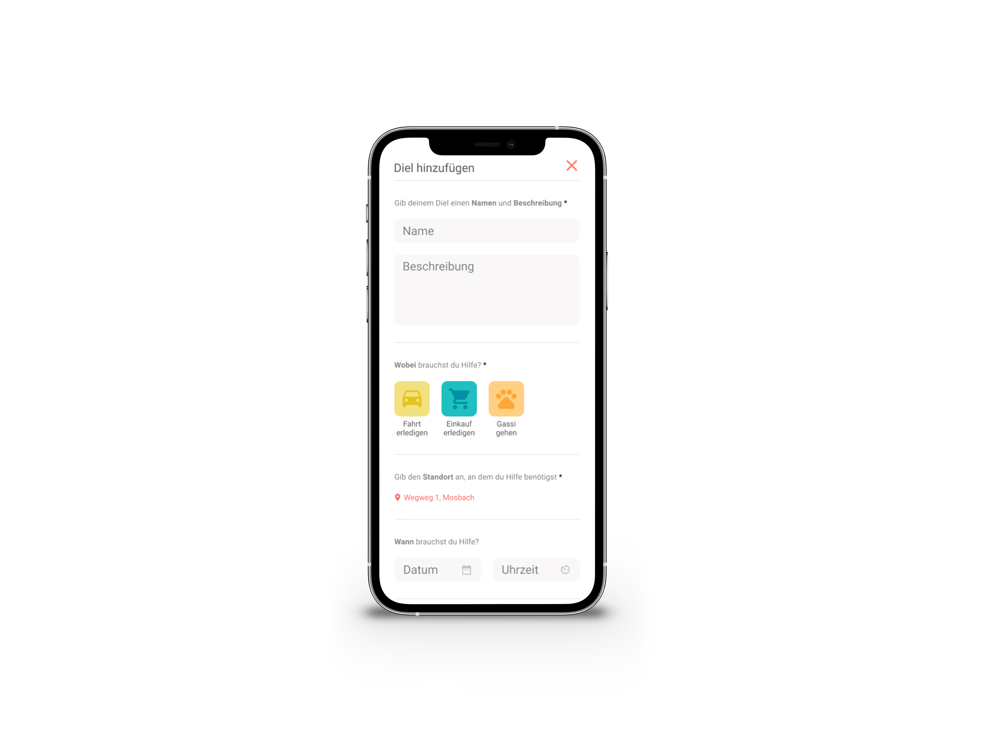

Private Project
UI & UX Design
There are many people which need help for certain tasks because they are not capable of doing these. Could be because of illness, age or disabilities. For these people it is very important that they can rely on beloved ones or professional service providers to help them with day to day tasks like groceries, walking with the dog or cooking.

With Diels we created an app which helps people to find and get help for day to day tasks. Especially for those who can’t rely on beloved ones or are not able to afford professional help.
Users can create request which then are displayed nearby people who are willing to provide them with help.